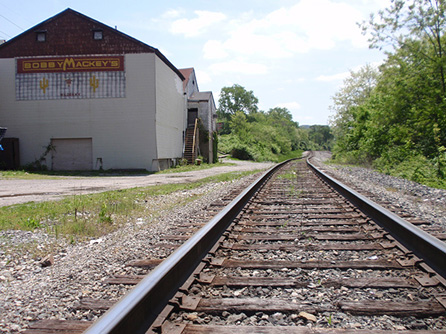
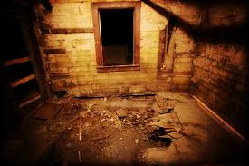
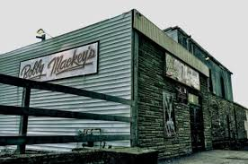

A place with some spooky stories and some paranormal activity, to ensure that your Halloween season is worth
while!
Media

This is the outside of haunting place called Bobby Mackey's Music World that gives the people with the
reputation of being impossible to scare a run for their money.

Another photo of the perfect, thrilling halloween experience!

A picture of the outside of the historically rich, yet terrifying night club that has many stories and
secrets
Why come to this terrifyingly terrific place?
Dancing
Karaoke
Listening to Bobby Mackey's band that plays on Friday and Saturday nights
Shopping in the gift shop
Taking a ghost tour in the basement
Going for a ride of the mechanical bull
To learn more about the great experience that you could have at Bobby Mackey's-
To Find Out More
Great American Ball Park
Smale Riverfront Park
Riverside Food Tours
Newport Aquarium
National Underground Railroad Freedom Center
Cincinnati Art Museum
Reviews
"All staff made my experience so special, and on the ghost tour they seemed to really know the stories that they
were telling!"-Susan Jones
"The atmosphere is awesome and the ghost stories left me truly believing in ghosts!"-Hayley Dimmick